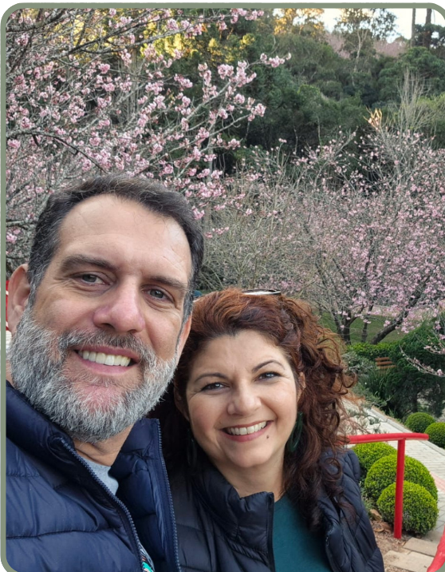
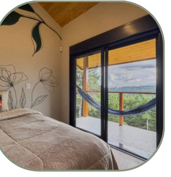
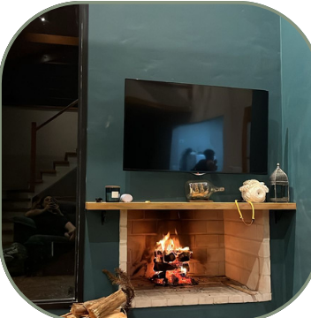
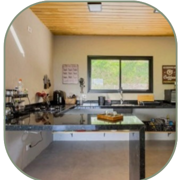
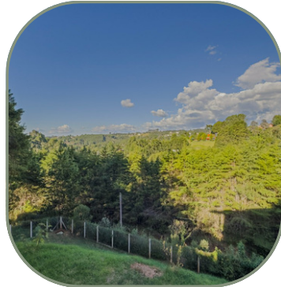
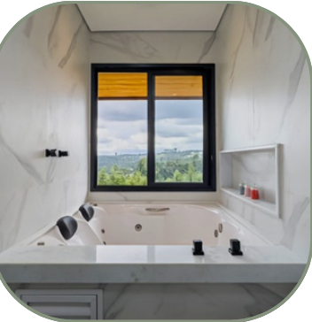

Hospitalidade · citado 53×
"A Angélica e o Edgar são uns queridos, muito atenciosos e acolhedores."

Tudo o que você precisa saber para uma estadia inesquecível.
Somos Angélica e Edgar, juntos há quase 30 anos. Adoramos viajar, conhecer novas culturas e sabores. Nossa família inclui nossos filhos humanos, Bianca e Samuel, e nossas filhas de 4 patas, Frida e Hortência.
A casa foi pensada para ser integrada à natureza. Todos os cômodos possuem vista para a montanha e mata local.

O que quem já ficou aqui destaca nas avaliações do Airbnb — com foto real de cada coisa.
★ 4,99 · 79 avaliações · Preferido dos hóspedes ver todas

"A Angélica e o Edgar são uns queridos, muito atenciosos e acolhedores."

"Eu adorava ficar relaxando na rede, apreciando a vista linda e observando os passarinhos."

"A estrutura da casa é completa, os ambientes são muito confortáveis e a decoração deixa tudo ainda mais especial."

"A casa é muito cheirosa, extremamente limpa, organizada e aconchegante."

"O local é muito bom e tranquilo para descansar, exatamente o que eu buscava."

Suíte com banheira de hidromassagem e vista para o vale — um dos pontos mais elogiados nas fotos dos hóspedes.
Sem citação direta ainda — pode ser a próxima!
Rua K, 225 - Jardim Primavera, Campos do Jordão - SP, 12466-176
Este é o endereço que o Google Maps e o Waze reconhecem corretamente — use-o para traçar a rota.
Reservar / ver anúncio no Airbnb
Instagram @casaterrasaltas_camposdojordao
Avalie-nos no Google
Telefones: (11) 99420-6875 | (11) 99417-6186